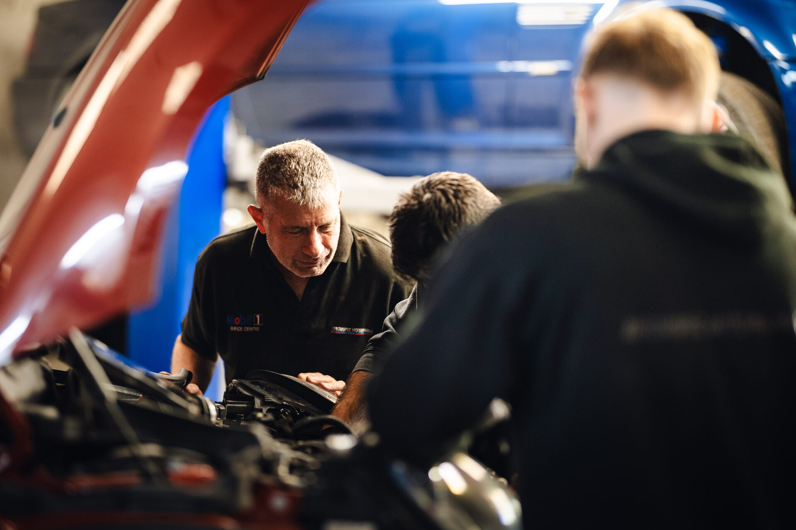
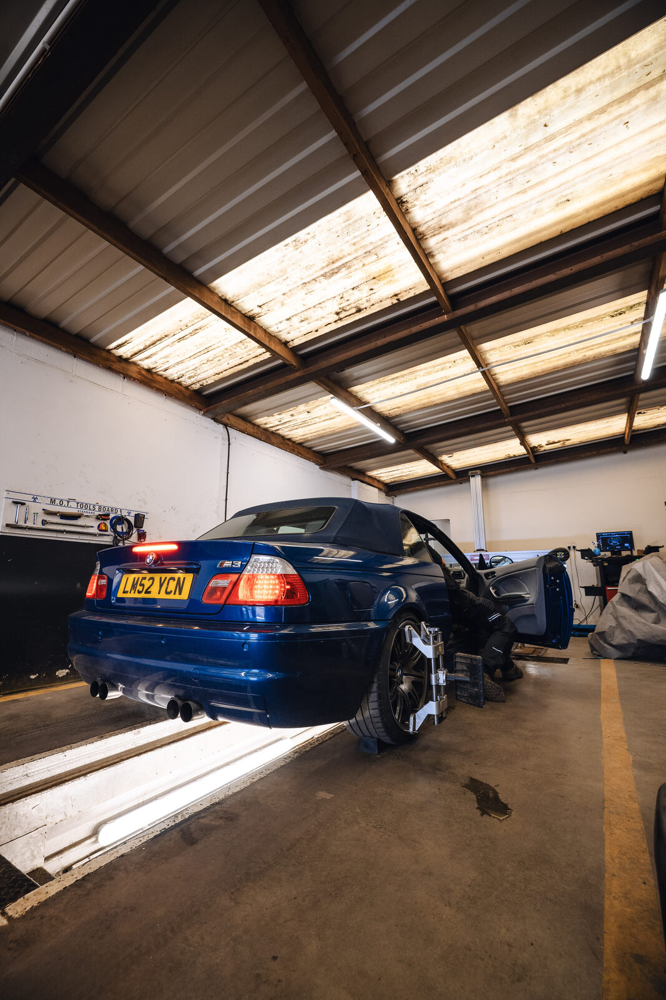
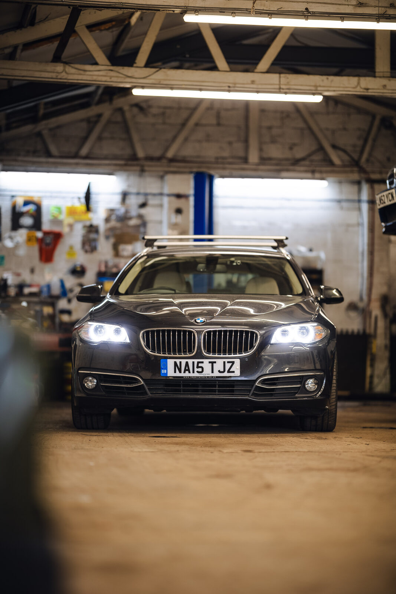

BMW & MINI Specialist Service & MOT Centre
Premium BMW and MINI servicing, MOTs and diagnostics delivered by true marque specialists for over 15 years, serving drivers in Salisbury, Amesbury, Winchester, Andover and beyond.
If you own a BMW or MINI and want marque-focused expertise throughout ownership, Bromspec MotorWorks is your destination. With over 75 years of combined BMW and MINI specialist experience, we cover everything from routine MOTs and servicing to advanced diagnostics and technical work.
Everything you need.
Nothing you don’t.
We focus on one thing: delivering the highest standard of BMW and MINI specialist care. Every car that comes through our workshop is handled by experienced technicians using factory-level diagnostic tools, systems and procedures. Exactly as BMW intended.
That is why BMW owners travel to us from Salisbury, Winchester, Andover, Amesbury and across Wiltshire. They know that their BMW is in safe, expert hands, their time is respected, and every recommendation is clear, honest and considered.
What makes Bromspec different?
- BMW & MINI specialists with dealer-level knowledge and equipment, including full ISTA diagnostics
- Servicing and MOTs carried out exclusively by experienced BMW technicians
- While-you-wait MOT appointments, conveniently booked and professionally managed
- Comfortable waiting area with tea, coffee, Wi-Fi and refreshments
- Courtesy cars are available to keep you moving when needed
- A relaxed out-of-town location with easy access, no town centre traffic in rush hours
- Clear, honest communication, no unnecessary work, no surprises


BMW MOTs Done
the Bromspec Way
An MOT at Bromspec is more than a legal requirement. It is part of looking after your BMW properly.
Your car is tested on site by BMW-trained technicians who work with these vehicles every day. That means potential issues are identified early, explained clearly, and handled with the care and accuracy BMWs demand, not rushed through or treated as a box-ticking exercise.
For many customers, their MOT is the first step in a long-term relationship with Bromspec. Once you experience the level of knowledge, transparency and convenience we offer, choosing us for everything BMW related simply makes sense.
Why BMW owners choose Bromspec for their MOT:
- BMW focused MOT testing by specialist technicians
- Express ‘while you wait’ appointments or a courtesy car for the day
- Clear, honest advice with no pressure and no unnecessary work
- Comfortable waiting area with refreshments and Wi-Fi
- Seamless support if any follow-up work is needed
BMW Servicing
& Maintenance
At Bromspec MotorWorks we have developed a Service Centre with the knowledge, skills and equipment so that our customers can drive with confidence knowing their vehicle is getting excellent care with unbeatable value.
From routine servicing to complex fault-finding, we use BMW-approved procedures, diagnostics and high-quality parts to keep your car performing exactly as it should.
We offer:
- Manufacturer-level servicing
- Advanced BMW diagnostics
- Preventative maintenance to avoid costly future repairs

Not Just BMW? We Can Help
While BMW and MINI are our speciality (and always will be), we also service and MOT all makes and models to the same high standards.
If you value expert workmanship, honest advice and a smooth experience, you’ll feel right at home here.

A Garage People
Travel For
We are located just outside Salisbury in a relaxed, easy-to-access setting near Lopcombe Corner. Ideal whether you are heading to work, heading home, or choosing to wait with a coffee while your car is taken care of. There is no town centre congestion and no rush hour stress.
If you prefer to drop your car off on the way to work, courtesy cars are available with advance booking, making it easy to get on with your day.
For BMW owners, Bromspec is not the nearest option. It is the right one.
The Bromspec Gallery
A look at the cars and craftsmanship that pass through our bays.
Your gallery is ready for photos & videos.
Drop files named 01.jpg, 02.jpg, 03.mp4 … into the images/gallery folder and they’ll appear here automatically. No editing needed.
Trusted by Drivers Who
Care About Their Cars
“The guys at Bromspec are spectacular. Nothing is too much hassle and they take really good care of their customers. They’ve looked after my Clubman for a few years now and I wouldn’t take it anywhere else! They’ve always answered all of my questions, have always booked my car in in a timely manner, completed the works to a high standard and provided a courtesy car if required. I would highly recommend them. Thanks guys!”
“James and his whole team down at Bromspec are fantastic. Honest and reliable mechanics. I could not recommend them enough. Finally found a company I can trust to fix my car and van. Huge credit to James and his team!”
“James and the team are fantastic and you truly get what you pay for. All ex BMW techs with all the BMW diagnostics gear etc. a great team and very approachable. If you have an issue with your BMW these guys will sort it. They offer courtesy cars, all types of servicing, fault diagnoses etc. Have been using the team for 5 years but the family have used them for over 10. Thanks guys for all the help.”
Book Your Appointment Today
Whether you need a BMW or MINI MOT, servicing, diagnostics or expert advice, our team is ready to help. Call us today or book your appointment through our website and let our BMW specialists take care of the rest.
10% off labour for Blue Light Card holders
Our way of saying thank you. NHS, emergency services, social care and armed forces personnel get 10% off all labour charges on servicing, MOTs, diagnostics and repairs. Just show your valid Blue Light Card when you book.